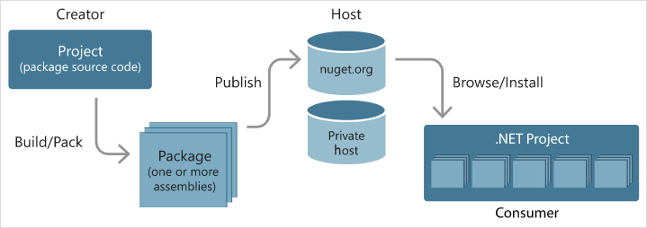
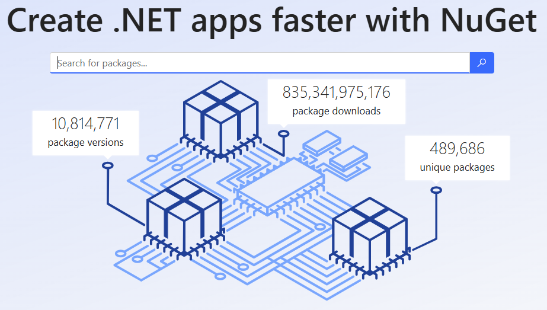
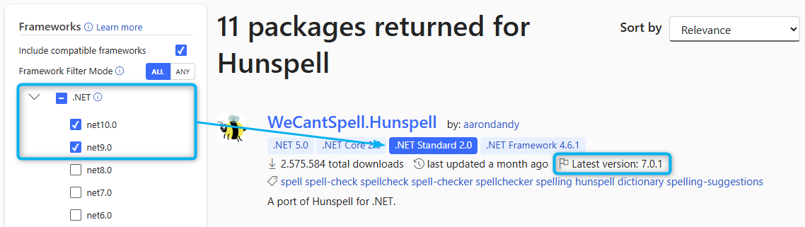
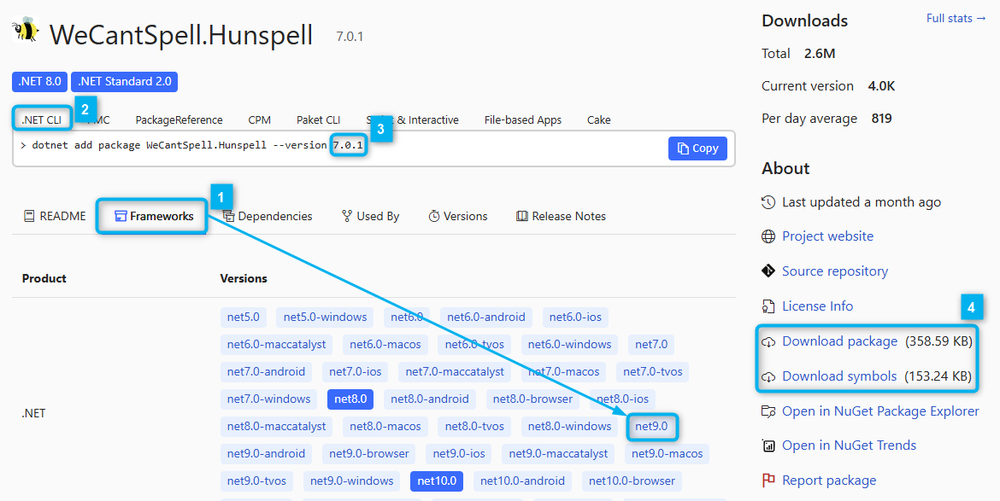

Descargar estos apunte en pdf o html
Antes de ver cómo organizar en librerías nuestras clases en C#, vamos a ver una serie de definiciones relacionadas con la organización de Software en UML y vamos a ver su correspondencia en .NET.
La primera definición sería de la paquete de clases la cual podemos decir que es un espacio de nombres que se utiliza para agrupar definiciones de tipos (clases, interfaces, estructuras, etc.) que están relacionados entre sí por una raíz semántica común o pueden cambiar juntos.
Según el lenguaje tendremos diferentes formas de definirlos, pero en C# los haremos a través de ña palabra reservada namespace como vimos de forma más superficial a principio del curso y seguramente ya habríamos intuido por la definición.
Nosotros en estos apuntes los vamos a representar mediante la siguiente figura en cuya pestaña vamos a poner el nombre del paquete.
Error: plantuml.jar file not found: "" Please download plantuml.jar from https://plantuml.com/download. If you are using VSCode or coc.nvim, then please set the setting "markdown-preview-enhanced.plantumlJarPath" to the absolute path of plantuml.jar file. If you don't want to use plantuml.jar, then you can use the online plantuml server by setting the setting "markdown-preview-enhanced.plantumlServer" to the URL of the online plantuml server, for example: https://kroki.io/plantuml/svg/
Ejemplo:
En C# las clases relacionadas con texto StringBuilder y UTF8Encoding C# las agrupa en el paquete de clases de nombre System.Text. Pero además, tendremos otro sub-paquete de clases dentro de System.Text denominado System.Text.RegularExpressions donde podremos encontrar definiciones de clases relacionadas con el manejo de texto y más específicamente con su gestión a través de expresiones regulares como son Regex o Match
Error: plantuml.jar file not found: "" Please download plantuml.jar from https://plantuml.com/download. If you are using VSCode or coc.nvim, then please set the setting "markdown-preview-enhanced.plantumlJarPath" to the absolute path of plantuml.jar file. If you don't want to use plantuml.jar, then you can use the online plantuml server by setting the setting "markdown-preview-enhanced.plantumlServer" to the URL of the online plantuml server, for example: https://kroki.io/plantuml/svg/
Un artefacto es un producto tangible o entidad física resultante del proceso de desarrollo de software. En esta definición tan amplia, podríamos incluir cosas como un documento de texto, un archivo fuente con un script, un archivo ejecutable, una librería, etc.
En el caso de C# y estos apuntes, serán ensamblados o ensambles tales como ficheros ejecutables .exe o librerías de clases con extensión .dll los vamos a representar mediante la siguiente figura.
Error: plantuml.jar file not found: "" Please download plantuml.jar from https://plantuml.com/download. If you are using VSCode or coc.nvim, then please set the setting "markdown-preview-enhanced.plantumlJarPath" to the absolute path of plantuml.jar file. If you don't want to use plantuml.jar, then you can use the online plantuml server by setting the setting "markdown-preview-enhanced.plantumlServer" to the URL of the online plantuml server, for example: https://kroki.io/plantuml/svg/
Importante
En estos apuntes describiremos un tipo de especial de artefacto de .NET que serán los paquetes de ensamblados de NuGet que son ficheros comprimidos con extensión .ngpkg y que pueden llevarnos a confusión con los paquetes de clases por llamarse también paquetes.
Ya hemos visto que clases relacionadas se pueden agrupar bajo un espacio de nombres (namespace) al que podremos denominar también "Paquete de clases".
namespace IdPaquete { public class ClaseA { … } public class ClaseB { … } }
También podemos hacer subagrupaciones anidando definiciones de espacios de nombres.
namespace IdPaquete { public class ClaseA { … } public class ClaseB { … } namespace IdSubPaquete { public class ClaseC { … } public class ClaseD { … } } }
Una sintaxis más conveniente y equivalente a la anterior podría ser:
namespace IdPaquete { public class ClaseA { … } public class ClaseB { … } } namespace IdPaquete.IdSubPaquete { public class ClaseC { … } public class ClaseD { … } }
Además, una de las principales ventajas de los namespaces, es que podremos repetir el identificador o nombre de una clase en paquetes diferentes.
namespace IdPaquete1 { public class ClaseA { … } } namespace IdPaquete2 { public class ClaseA { … } }
Para acceder a las clases 'públicas' de un paquete, desde otro paquete podremos usar el nombre completamente cualificado (CCN), esto es, indicando la ruta separada por puntos.
// Supongamos que queremos usar alguna de las clases definidas anteriormente y // que estarían en otro fichero fuente e incluso en otro ensamblado. namespace IdPaquete { public class ClaseA { … } public class ClaseB { … } } namespace IdPaquete.IdSubPaquete { public class ClaseC { … } public class ClaseD { … } }
// Clase definida en MiClase.cs ------------------------------------------
namespace MiPaquete
{
public class MiClase
{
public void MetodoDeMiClase()
{
IdPaquete.ClaseA a = new IdPaquete.ClaseA();
IdPaquete.SubPaquete.ClaseD d = new IdPaquete.SubPaquete.ClaseD();
...
}
...
}
}
O podremos usar la cláusula using <NombreDelPaquete>; normalmente al principio del fuente y donde indicaremos aquellos espacios de nombres o paquetes de los que queramos utilizar sus clases 'públicas'.
using IdPaquete; using IdPaquete.SubPaquete; namespace MiPaquete { public class MiClase { public void MetodoDeMiClase() { ClaseA a = new ClaseA(); ClaseD d = new ClaseD(); ... } ... } }
Otra característica del using, es que me permite crear alias que nos facilitas el acceso a espacios de nombres o a tipos sobre todo cuando hay un nombre de clase repetido. Es uso de alias es menos frecuente.
// Supongamos que queremos usar alguna de las dos ClassA definidas anteriormente y // que estarían en otro ficheros fuentes o ensamblados diferentes namespace IdPaquete1 { public class ClaseA { … } } namespace IdPaquete2 { public class ClaseA { … } } // Clase definida en MiClase.cs ------------------------------------------ // Accedo directamente al tipo del paquete y con el using le doy // otro nombre directamente. using ClaseA1 = IdPaquete1.ClaseA; using ClaseA2 = IdPaquete2.ClaseA; namespace MiPaquete { public class MiClase { public void MetodoDeMiClase() { ClaseA1 a1 = new ClaseA1(); ClaseA2 a2 = new ClaseA2(); ... } ... } }
Además de por espacios de nombres, también podremos separar nuestras clases en unidades mayores denominadas librerías, en el mundo java se les llama directamente artefactos.
En el caso de C# son ficheros que contendrán IL de clases organizadas en uno o más espacios de nombres o paquetes.
En lenguajes compilados a bytecode. Estás librerías podrán ser archivos aunque normalmente se publicarán e instalarán a través de algún CLI:
En lenguajes interpretados normalmente, los generaremos e instalaremos directamente desde un CLI:
Podré publicar mis librerías opensource y usar librerías de terceros a través de gestores de paquetes como:
Aunque vamos ha hablar de ellos más adelante para el caso concreto de NuGet, podemos resumir que son repositorios de artefactos públicos o privados con control de versiones.
Nota
En la practica todos los lenguajes dispondrán de un gestor de paquetes que se encargará de publicar y descargar los paquetes online. Esto es así porque normalmente existan dependencias con otros paquetes y el gestor se encargará también de descargarlas.
En general, siempre que usemos una clase, tendremos una dependencia de uso sobre la misma. Esto es, necesitaremos su definición. Pero esta puede estar definida:
Error: plantuml.jar file not found: "" Please download plantuml.jar from https://plantuml.com/download. If you are using VSCode or coc.nvim, then please set the setting "markdown-preview-enhanced.plantumlJarPath" to the absolute path of plantuml.jar file. If you don't want to use plantuml.jar, then you can use the online plantuml server by setting the setting "markdown-preview-enhanced.plantumlServer" to the URL of the online plantuml server, for example: https://kroki.io/plantuml/svg/
Hasta ahora en un programa sencillo en C# como el del ejemplo hemos usados librerías de clases definidas ya en las BCL.
using System;
using System.IO;
namespace Program
{
public class Program
{
private static void Main()
{
try
{
Console.WriteLine("Borrando carpeta datos...");
Directory.Delete("datos", true);
Console.WriteLine("Carpeta borrada");
}
catch (FileNotFoundException e)
{
Console.WriteLine(e.Message);
}
}
}
}
Del ejemplo anterior, se nos habrá generado una dependencia entre clases ya que nuestra clase Program usa otras clases como Console, Directory y FileNotFoundException estas clases si estamos usando el FrameWork o (Marco de trabajo) de Microsoft.NETCore.App (X.0.0) donde (X.0.0) sería la versión de .NET que tenemos instalada. Estarán definidas donde se haya instalado el mismo y se encuentren sus ensamblados para usar. En el caso de Windows sería la ruta:
C:\Program Files\dotnet\shared\Microsoft.NETCore.App\X.0.0
Si vemos la definición de cada una de las clases anteriores tendremos que ...
Para el caso de Console.cs podemos observar forma parte del paquete System. Este espacio de nombres o 'paquete' está parcialmente definido en el ensamblado System.Console.dll.
namespace System { public static class Console ...
Para el caso de Directory.cs podemos observar forma parte del paquete System.IO. Este espacio de nombres o 'paquete' está parcialmente definido en el ensamblado System.IO.FileSystem.dll.
namespace System.IO { public static class Directory
Para el caso de FileNotFoundException.cs podemos observar forma parte del paquete System.IO. Este espacio de nombres o 'paquete' está parcialmente definido en el ensamblado System.Runtime.dll.
namespace System.IO { public class FileNotFoundException : IOException
Importante
De lo anterior deducimos que en .NET, un mismo paquete de clases puede estar definido en varios ensamblados o dll's diferentes. Por ejemplo, en el caso anterior el paquete System.IO está parcialmente definido en los ensamblados System.IO.FileSystem.dll y System.Runtime.dll.
De lo anterior, vemos que nuestro programa depende de tre ensamblados o 'librerías' del Framework que forman parte de las BCL.
En el siguiente diagrama podemos observar las dependencias de ejecución en un primer nivel, extraídas de los fuentes anteriores, para nuestro programa.
Nota
Estas dependencias son en un primer nivel puesto que si nos fijamos a su vez hay otros using de otros paquetes de las BCL en dichas clases lo que a su vez generaría otras dependencias. Esto significa que no bastaría copiar solo esas 3 dll's del Framework para que nuestro programa funcione, ya que asu vez ellas necesitan de otras para ejecutarse.
Error: plantuml.jar file not found: "" Please download plantuml.jar from https://plantuml.com/download. If you are using VSCode or coc.nvim, then please set the setting "markdown-preview-enhanced.plantumlJarPath" to the absolute path of plantuml.jar file. If you don't want to use plantuml.jar, then you can use the online plantuml server by setting the setting "markdown-preview-enhanced.plantumlServer" to the URL of the online plantuml server, for example: https://kroki.io/plantuml/svg/
Según Microsoft NuGet es un repositorio de librerías/artefactos de .NET.
Proporciona su propia su propia herramienta de gestión de paquetes CLI denominada también NuGet.
Básicamente, como indica la ilustración, nos permitirá:
Paso 1: Cómo desarrolladores crear un artefacto formado por uno o más ensamblados y publicarlo en un repositorio público como nuget.org o bien en uno privado como por ejemplo Azure DevOps. Según la documentación de microsoft...
Cita
"Con independencia de su naturaleza, un host actúa como un punto de conexión entre los creadores y los consumidores de paquetes. Los creadores compilan paquetes NuGet útiles y los publican en un host. Después, los consumidores buscan paquetes útiles y compatibles en hosts accesibles, los descargan y los incluyen en sus proyectos. Una vez instalados en un proyecto, las API de los paquetes están disponibles para el resto del código del proyecto."
Paso 2: Posteriormente usar el mismo en otros desarrollos o proyectos de .NET de forma 'automatizada' y con control de versiones.

Es importante que los paquetes que descargamos sean compatibles con el FrameWork que estamos usando para realizar nuestra aplicación. Según la documentación de microsoft...
Cita
"Un paquete "compatible" implica que contiene ensamblados compilados para al menos una plataforma .NET de destino que es compatible con la plataforma de destino del proyecto de consumo."
Usaremos una sintaxis similar a la siguiente: <VersiónPrincipal>.<VersiónSecundaria>.<Revisión>[-<Sufijo>[.<Revisión>]] donde ...
Ejemplo de orden de versiones para una misma revisión:
1.0.0-alpha Versión de pruebas completa para verificadores.1.0.0-alpha.11.0.0-beta.2 Versión de pruebas completa pública revisión 2.1.0.0-beta.111.0.0-rc.1 Versión completa pública candidata a ser liberada revisión 1.1.0.0 Versión completa pública liberada.Si tienes curiosidad de cómo generar versiones para usar en NuGet puedes consultar este enlace.
Notación ㊙️
A partir de ahora, vamos a usar el acrónimo PW (Project Workspace) para denotar la carpeta 📁 donde está ubicado el espacio de trabajo de nuestro proyecto.
Vamos a verlo a través de un ejemplo. En nuestro caso queremos comprobar ortográficamente una palabra introducida por teclado y vamos a buscar si hay algún tipo de libería de terceros que nos ofrezca esta funcionalidad.
Paso 1: Iremos a nuget.org y buscaremos por ejemplo por la palabra 'spell'

Paso 2: Hemos marcado librerías disponibles para la versión actual LTS del Framework que es net8.0 y nos filtrará por orden de más usado y la primera entrada es WeCantSpell.Hunspell y aunque nos ponga en la descripción una versión de .NET que no es la nuestra, no hay problema, ya que al marcar los check de filtrado nos aseguramos que es compatible y podemos asegurarnos al acceder a la información del paquete.

Paso 3: La mejor opción es descargar el paquete desde la línea de comandos con el CLI de .NET dotnet para ello como vemos en 2️⃣ seleccionaremos la pestaña .NET CLI y copiaremos el comando para instalarlo 3️⃣.
Importante
Fíjate que en 1️⃣ nos indica con qué versión de .NET es compatible el artefacto o ensamblado que nos estamos descargando como habíamos indicado en el filtro. Resaltando las versiones LTS (Long Term Support).
Otra opción es descargar el paquete para instalarlo de forma offline con el enlace de 4️⃣. Esto nos descargará un fichero con la extensión .nupkg por si queremos tener una copia para hacer nuestro propio repositorio. Aunque esta opción no la vamos a ver aquí.

Paso 4: Desde nuestro PW ejecutaremos el siguiente comando indicado en el paso 3.
C:\MiProyectoNET> dotnet add package WeCantSpell.Hunspell --version 7.0.1 Determinando los proyectos que se van a restaurar ...
Tras instalar el paquete se abrá añadido la dependencia en el fichero de configuración de nuestro proyecto, que en el ejemplo se llamaba MiProyectoNET.csproj
<Project Sdk="Microsoft.NET.Sdk"> ... <ItemGroup> <PackageReference Include="WeCantSpell.Hunspell" Version="7.0.1" /> </ItemGroup> </Project>
Además, habrá descargado en ensamblado WeCantSpell.Hunspell.dll junto al del proyecto ya que lo necesitaremos para ejecutar.
Bueno, ya podemos usar las clases definidas en la librería que hemos instalado. Para ello, vamos a necesitar bajarnos el diccionario en castellano a usar por la Liberia siguiendo los siguientes pasos:
Bájate el zip diccionario_castellano_recurso.zip.
Extrae los archivos Spanish.dic y Spanish.aff que forman el diccionario en el área de trabajo del proyecto (junto al archivo .csproj).
Copia en el Program.cs el siguiente código de proba del que puedes leer los comentarios para entender lo que hace. (Puedes descargar el código completo desde el siguiente enlace).
using System;
using System.Linq;
using WeCantSpell.Hunspell;
public class Program
{
static void Main()
{
Console.Write("Cargando diccionario...\n");
string rutaEjecucion = Regex.Match(
input: Directory.GetCurrentDirectory(),
pattern: @"^(?<ruta>.*?)(?=\\bin)",
options: RegexOptions.IgnoreCase
).Groups["ruta"].Value;
WordList diccionario = WordList.CreateFromFiles(Path.Combine(rutaEjecucion, "Spanish.dic"));
string palabra;
do
{
Console.Write("Introduce una palabra: ");
palabra = Console.ReadLine()!;
string mensaje;
// Si la palabra no está en el diccionario en español.
if (!diccionario.Check(palabra))
{
mensaje = $"{palabra} no es correcta.\n";
// Le pido al objeto diccionario en castellano que me devuelva
// un array de sugerencias posibles a partir de la palabra introducida.
string[] sugerencias = [.. diccionario.Suggest(palabra)];
if (sugerencias.Length > 0)
mensaje += $"¿Quisiste decir {String.Join(", ", sugerencias)}?\n";
}
else
mensaje = $"{palabra} es correcta.\n";
Console.WriteLine(mensaje);
} while (palabra != "adios");
}
}
Si ejecuto el programa obtendremos por consola:
Cargando diccionario... Introduce una palabra: prueb prueb no es correcta. ¿Quisiste decir prueba, pruebe, pruebo?
Si quisiéramos dejar de usar la librería en nuestro proyecto ejecutaríamos...
C:\PW> dotnet remove package WeCantSpell.Hunspell info : Quitando PackageReference para el paquete "WeCantSpell.Hunspell" del ...
Si quisiéramos, actualizar o bajarnos las dependencias de un proyecto ejecutaremos...
C:\PW> dotnet restore
Si quisiéramos saber las dependencias de nuestro proyecto...
C:\PW> dotnet list package El proyecto "ejemplo1" tiene las referencias de paquete siguientes []: Paquete de nivel superior Solicitado Resuelto > WeCantSpell.Hunspell 7.0.1 7.0.1
Si quisiéramos saber los repositorios de los que nos estamos bajando los paquetes... Podríamos cambiar los repositorios mediante otros comandos del CLI.
C:\PW> dotnet nuget list source
Orígenes registrados:
1. nuget.org [Habilitado]
https://api.nuget.org/v3/index.json
2. Microsoft Visual Studio Offline Packages [Habilitado]
C:\Program Files (x86)\Microsoft SDKs\NuGetPackages\
Notación ㊙️
Vemos loa pasos para hacerlo con el CLI dotnet:
Imaginemos que queremos crear una solución en la carpeta SW y dentro tenemos un proyecto de Consola en SW\MiProyecto\MiProyecto.csproj (siendo SW\MiProyecto\ el PW). Puedes crear el proyecto y añadirlo a la solución haciendo:
C:\SW> dotnet new console -n MiProyecto C:\SW> dotnet new sln -n Sw C:\SW> dotnet sln add .\MiProyecto\MiProyecto.csproj Se ha agregado el proyecto "MiProyecto\MiProyecto.csproj" a la solución.
Ahora queremos crear una librería llamada MiLibreria.dll donde definiremos diferentes clases o tipos a usar en nuestro programa y que además podrán ser reusables por otros programas.
Paso 1: Vamos a la carpeta donde esté ubicada nuestra solución y creamos un proyecto de librería de clases con ...
C:\SW> dotnet new classlib -n MiLibreria
Paso 2: Con la misma sintáxis que vimos en temas anteriores, agregaremos un nuevo proyecto a nuestra solución con...
C:\SW> dotnet sln add .\MiLibreria\MiLibreria.csproj Se ha agregado el proyecto "MiLibreria\MiLibreria.csproj" a la solución.
Paso 3:Añadiremos una 'referencia' al mi proyecto de consola a la nueva librería de clases creada. Con esto, esto estaremos generando una dependencia con el ensamblado en MiLibreria para poder usarlo en MiProyecto.
C:\SW> dotnet add .\MiProyecto\MiProyecto.csproj reference .\MiLibreria\MiLibreria.csproj Se ha agregado la referencia "..\MiLibreria\MiLibreria.csproj" al proyecto.
Si ahora examinamos el contenido del archivo MiProyecto.csproj se habrá añadido la línea:
<Project Sdk="Microsoft.NET.Sdk"> ... <ItemGroup> <ProjectReference Include="..\MiLibreria\MiLibreria.csproj" /> </ItemGroup> </Project>
Error: plantuml.jar file not found: "" Please download plantuml.jar from https://plantuml.com/download. If you are using VSCode or coc.nvim, then please set the setting "markdown-preview-enhanced.plantumlJarPath" to the absolute path of plantuml.jar file. If you don't want to use plantuml.jar, then you can use the online plantuml server by setting the setting "markdown-preview-enhanced.plantumlServer" to the URL of the online plantuml server, for example: https://kroki.io/plantuml/svg/
Importante
Esto indicará a la solución y al proyecto, que antes de compilarse MiProyecto.csproj debería compilarse MiLibreria.csproj
Paso 4: Dentro del proyecto de la librería de clases, el espacio de nombres por defecto para empaquetar nuestras clases será el mismo nombre de la librería en este caso MiLibreria.
Paso 5: Vamos añadir una clase de utilidad en la librería para ampliar las funcionalidades desde la entrada por la consola. Para ello, renombra remos el archivo Class1.cs generado por defecto a ConsolaAmpliada.cs y copiaremos el siguiente código en su interior.
static public class ConsolaAmpliada
{
private static string LeeLinea(bool hidden = true)
{
string text = "";
do
{
ConsoleKeyInfo key = Console.ReadKey(true);
if (key.Key != ConsoleKey.Backspace && key.Key != ConsoleKey.Enter)
{
text += key.KeyChar;
Console.Write(hidden ? "*" : key.KeyChar.ToString());
}
else
{
if (key.Key == ConsoleKey.Backspace && text.Length > 0)
{
text = text.Substring(0, (text.Length - 1));
Console.Write("\b \b");
}
else if (key.Key == ConsoleKey.Enter)
{
Console.Write("\n");
break;
}
}
} while (true);
return text;
}
public static string LeePassword(string label, bool hidden = true)
{
string passWord;
bool valid;
do
{
Console.Write($"{label}: ");
passWord = LeeLinea(hidden);
valid = passWord.Length > 0;
if (!valid)
Console.WriteLine($"El password debe tener una al menos un carácter.");
} while (!valid);
return passWord;
}
}
Paso 6: Ahora ya podremos usar la librería en MiProyecto siempre y cuando hayamos hecho la referencia que se indicó en el paso 3.
Para ello, añadiremos la clausula using para indicar el paquete de clases de la librería referenciada que vamos a usar en nuestro programa (línea 3) y ya podremos usar las clases y tipos definidos en ella (línea 9)
namespace MiProyecto; using MiLibreria; public static class Program { public static void Main() { string clave = ConsolaAmpliada.LeePassword("Clave", true); Console.WriteLine($"La clave introducida es {clave}"); } }
Posiblemente ya te hayas fijado pero en todos nuestros ejemplos hemos antepuesto el modificador de acceso public a la definición de nuestras clases. Esto sucede porque, al igual que en nuestras clases, podemos definir cierto grado de 'encapsulación' para la definición de los tipos y clases en los paquetes.
Importante
De esta manera evitaremos el uso inapropiado por parte de terceros de nuestras clases auxiliares o tipos internos y así generar dependencias innecesarias.
Para ellos usaremos los siguiente modificadores de acceso antepuestos a la definición de nuestros tipos:
private: El tipo o la clase solo puede ser usada dentro del paquete o namespace donde se define.
internal: El tipo o la clase solo puede ser usada dentro del ensamblado o librería donde se define. Pero sí se puede usar en cualquier paquete dentro ensamblado.
public: El tipo o la clase se podrá usar en cualquier ámbito.
namespace MiLibreria { public class ClasePublica { // Se podrá usar en cualquier sitio que hagamos un using del namespace. // tanto fuera como dentro del ensamblado. } namespace MisTipos { internal struct ClaseValorInmutableDelEnsamblado { // Se podrá usar SOLO dentro de este ensamblado siempre que hagamos un // using MiLibreria.MisTipos si estamos fuera del paquete MiLibreria. } private enum EnumDelPaquete { // Solo se puede usar dentro de MisTipos } } }
En la siguiente URL puedes encontrar la información oficial acerca de la publicación o despliegue de aplicaciones.
Generando un único ejecutable para una plataforma específica. Deberíamos ejecutar la siguiente instrucción del CLI de .NET en el 'Workspace' donde se encuentre nuestra solución ...
dotnet publish --configuration Release
--runtime win-x64
--output ./release nombre_solucion.sln
--self-contained=false -p:PublishSingleFile=true
Donde:
--configuration Release: Indica que queremos hacer una compilación para cliente sin información de depuración.--runtime win-x64: Indica que queremos que la solución sea compilada para plataformas Windos de 64 bits. Donde win-x64 es el <RID> (Runtime Identifier) y puedes ver las sus diferentes valores aquí https://learn.microsoft.com/es-es/dotnet/core/rid-catalog. De esta forma se creará un 'cargador' para ejecución específico de la plataforma.--output ./release: Indica donde queremos que nos genere el ejecutable final final.nombre_solucion.sln: Será el nombre de nuestra solución.--self-contained=false: Indicará si queremos incluir el CLR necesario para ejecutar en el ejecutable. Al poner false el CLR de .NET deberá estar instalado en la máquina donde queramos ejecutar.-p:PublishSingleFile=true: Indicamos que queremos generar un único fichero .exe sin librerías que lo acompañes.Veamos el concepto de dependencia circular a través de un ejemplo. Para ellos supongamos que tenemos las siguiente dependencias entre librerías....
Si nos fijamos dichas dependencias nos darán lugar a un grafo dirigido sin ciclos.
Además podemos ver que MiLibreria1.dll depende de forma indirecta de MiLibreria4.dll. Esto significa que al compilar la solución MiLibreria4.dll se deberá compilar antes que MiLibreria1.dll.
Error: plantuml.jar file not found: "" Please download plantuml.jar from https://plantuml.com/download. If you are using VSCode or coc.nvim, then please set the setting "markdown-preview-enhanced.plantumlJarPath" to the absolute path of plantuml.jar file. If you don't want to use plantuml.jar, then you can use the online plantuml server by setting the setting "markdown-preview-enhanced.plantumlServer" to the URL of the online plantuml server, for example: https://kroki.io/plantuml/svg/
Imaginemos ahora que queremos usar una clase en MiLibreria4.dll que está definida MiLibreria1.dll. Deberemos añadir una referencia en MiLibreria4.dll a MiLibreria1.dll y por tanto una dependencia sobre la misma.
Si nos fijamos eso generará un ciclo en el grafo y por tanto un dependencia circular. Esto implicará que dotnet no sepa que librería tiene que compilar primero.
Peligro
Deberemos de evitar este tipo de dependencias circulares 💀 siempre, tanto entre nuestras librerías, como entre nuestras clases y paquetes.
Error: plantuml.jar file not found: "" Please download plantuml.jar from https://plantuml.com/download. If you are using VSCode or coc.nvim, then please set the setting "markdown-preview-enhanced.plantumlJarPath" to the absolute path of plantuml.jar file. If you don't want to use plantuml.jar, then you can use the online plantuml server by setting the setting "markdown-preview-enhanced.plantumlServer" to the URL of the online plantuml server, for example: https://kroki.io/plantuml/svg/
Vamos a verlo a través de un ejemplo. Para ello, supongamos una librería MyLibrary1.dll con el paquete de clases (namespace) MyLibrary1.
El paquete de clases MyLibrary1 está definido dentro de una librería en un ensamblado aparte denominado MyLibrary1.dll. Además, este paquete de clases contienela definición de la clase ClassB y la clase ClassA que usa un método estático de utilidad definido en MyLibrary1.Utilities.ClassU1 y por tanto tiene una dependencia con el tipo ClassU1. Estando ClassU1 definido también dentro de MyLibrary1.dll.
Además tenemos un proyecto de consola Program.exe que usa el tipo MyLibrary1.ClassA definido en la librería anterior y por tanto tendremos una dependencia con la misma.
Vamos a intentar representar el caso descrito arriba para intentar visualizar las dependencias de forma gráfica. (Vuelve a releerlo viendo la representación)
Error: plantuml.jar file not found: "" Please download plantuml.jar from https://plantuml.com/download. If you are using VSCode or coc.nvim, then please set the setting "markdown-preview-enhanced.plantumlJarPath" to the absolute path of plantuml.jar file. If you don't want to use plantuml.jar, then you can use the online plantuml server by setting the setting "markdown-preview-enhanced.plantumlServer" to the URL of the online plantuml server, for example: https://kroki.io/plantuml/svg/
Nuestro proyecto va creciendo y ahora desde Program.exe usamos una clase ClassC, que por circunstancias, hemos definido en el paquete de clases (namespace) MyLibrary2 incluido en una biblioteca de clases del mismo nombre llamada MyLibrary2.dll.
Además, esta clase ClassC usa también un método de utilidad definido en MyLibrary1.Utilities.ClassU1. Por tanto ...
MyLibrary2.dll sobre MyLibrary1.dll (Porque ClassC usa ClassU1).Program.dll sobre MyLibrary2.dll (Porque Program usa ClassC).Vamos a intentar representar la nueva situación tras evolucionar nuestro proyecto y sus dependencias mediante el correspondiente diagrama. (Vuelve a releer las nueva situación viendo la representación)
Error: plantuml.jar file not found: "" Please download plantuml.jar from https://plantuml.com/download. If you are using VSCode or coc.nvim, then please set the setting "markdown-preview-enhanced.plantumlJarPath" to the absolute path of plantuml.jar file. If you don't want to use plantuml.jar, then you can use the online plantuml server by setting the setting "markdown-preview-enhanced.plantumlServer" to the URL of the online plantuml server, for example: https://kroki.io/plantuml/svg/
Importante
Se producirá una situación de doble ámbito de uso de la clase de utilidad ClassU1. Pues es usada dentro de la propia MyLibrary1.dll por parte de ClassA y ahora también fuera, por parte de una librería diferente MyLibrary2.dll a través de su clase ClassC.
Si simplificamos el diagrama de dependencia de librerías anterior a sus artefactos tendremos el esquema de la derecha...
Además, la situación de doble ámbito descrita implicará que:
Existe una dependencia de MyLibrary1.dll por parte de MyLibrary2.dll, cuando realmente solo hay una clase que queremos reutilizar y estaba en MyLibrary1.dll porque hasta ahora solo se utilizaba ahí.
Ahora siempre que queramos usar MyLibrary2.dll vamos a necesitar junto a ella MyLibrary1.dll, cuando realmente hay un montón de clases que no vamos a utilizar ni nos interesan de la misma. Esto derivará en una situación de acoplamiento entre nuestra librerías.
Error: plantuml.jar file not found: "" Please download plantuml.jar from https://plantuml.com/download. If you are using VSCode or coc.nvim, then please set the setting "markdown-preview-enhanced.plantumlJarPath" to the absolute path of plantuml.jar file. If you don't want to use plantuml.jar, then you can use the online plantuml server by setting the setting "markdown-preview-enhanced.plantumlServer" to the URL of the online plantuml server, for example: https://kroki.io/plantuml/svg/
Una posible solución será sacar la clase que produce el 'doble ámbito' de uso a una tercera librería como por ejemplo Utilities.dll y así separar lo que estaba produciendo la dependencia no adecuada.
Error: plantuml.jar file not found: "" Please download plantuml.jar from https://plantuml.com/download. If you are using VSCode or coc.nvim, then please set the setting "markdown-preview-enhanced.plantumlJarPath" to the absolute path of plantuml.jar file. If you don't want to use plantuml.jar, then you can use the online plantuml server by setting the setting "markdown-preview-enhanced.plantumlServer" to the URL of the online plantuml server, for example: https://kroki.io/plantuml/svg/
Fijémonos que ahora el doble ámbito de uso ha desaparecido, pues en ambos casos estamos accediendo a una clase fuera de nuestra librería. Ahora en Utilities.dll.